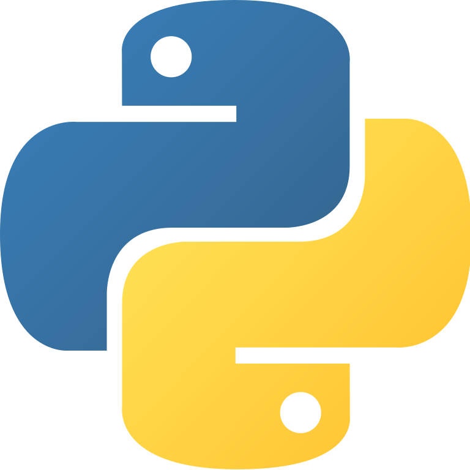

MATLAB
R
Python
HTML
CSS
The box to the left displays the programming languages I have experience in.
I learned MATLAB and R for the mathematical biology module of my degree. In MATLAB we wrote basic programs to get comfortable with the logic of coding, and used more complex programs to aid our learning, for example one that displays a phase-plane diagram for a pair of differential equations. We used R for computing statistics and displaying data in charts.
To further increase my programming experience, I took the Code Nation Develop: Coding course, where I learned Python, HTML and CSS. I used my knowledge of Python to create a text-based adventure game with my team, something I really enjoyed. The HTML and CSS I learned are being used on this website. So I hope it looks good!
I'm also interested in learning:
C++
JavaScript